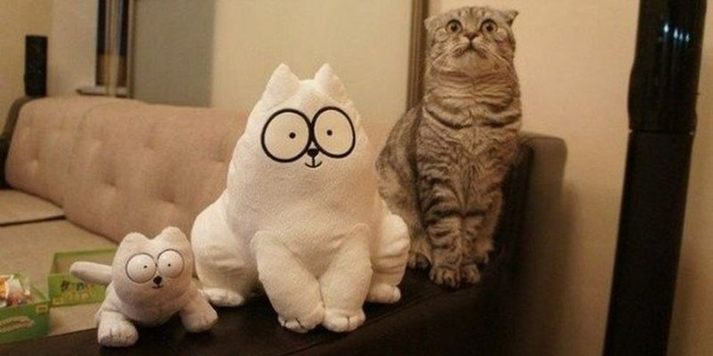

Дизайн для котов
Любовь Гулько
Дизайн для котов
Любовь Гулько
Когда понадобятся навыки дизайнера
- У вас нет возможности связаться с дизайнером
- Срочные правки
- Свой проект
Чек-лист
- Я точно понимаю какая именно задача у этого проекта?
- Кто целевая аудитория проекта? Что это за люди и какие они?
- Какую «боль» пользователя я решаю своим проектом?
Чек-лист
- Точно ли тут нет усложнений на ровном месте?
- Точно ли целевое действие сделать легко и понятно?
- Мой знакомый может легко и быстро сказать что от него требуется
на этой странице?
- Зачем?
Иерархия смыслов
Что важно для пользователя, а что — нет?
Помните, что не всё на странице — главное.
Важное — подчеркните, второстепенное ослабьте.
И не забудьте рассказать, где пользователь находится и о чём вообще
на вашей странице идёт речь.
Чек-лист
- На странице есть описание сути и контекста происходящего?
- Какой контент самый главный?
- Какой контент второстепенный?
- Зачем?
Контраст и цветовая схема
Лучше чёрно-белый дизайн, чем все цвета радуги, мешающие найти
в вашем проекте то, что нужно.
Если у вы поддерживаете уже существующий проект — не отклоняйтесь
от гайдлайна.
Если вам очень хочется отклонится от гайдлайна — найдите дизайнера
и обсудите с ним решение, не импровизируйте.
Чек-лист
- Прошёл ли интерфейс проверку на контрастность и доступность?
- Не переборщил/а ли я с богатством красок?
- Почему именно эти цвета?
Чек-лист
- Я не делаю ли я сейчас всё точь-в-точь как у того парня?
- Есть вероятность, что я давно не смотрел\а на работы других людей
и сейчас делаю работу «из головы»?
- Точно ли я понимаю зачем я беру ту или иную идею на вооружение?
- Зачем?
Теория близости
Схожие визуально и расположенные рядом друг с другом объекты воспринимаются связанными
Чек-лист
- Все ли элементы дизайна объединились верно?
- Верные ли по смыслу отступы между элементами?
- Как между собой взаимодействуют картинки и контент?
Модульная сетка является лишь математическим подтверждением заранее принятых композиционных решений. Сама по себе сетка не может принимать композиционных решений, в свете чего любые ссылки на то, что «так по сетке», следует заранее изгнать из своего лексикона.
Иннокентий Келейников в «Дизайне книги»,
цитата встречена в блоге Игоря Штанга
- Самое главное — читабельность
- Выбирайте проверенные шрифты
- 15-25px для наборного текста
- 120-145% для интерлиньяжа
- Длина строки — 2-3 алфавита, не больше
- Не используйте «интересный» шрифт, если только не уверены на все сто, что понимаете зачем он тут вам
Эрик Шпикерман: «О шрифте»
Чек-лист
- Положа руку на сердце, я могу сказать, что этот текст легко прочесть?
- Подходит ли по характеру этот шрифт к этой ситуации?
- Оптимальный ли font-size, line-height и color у текста?
Консистентность
Согласовывайте элементы дизайна так, чтобы получился универсальный конструктор.
Чем больше разнообразия в том, как вы оформите различные элементы интерфейса, тем выше вероятность, что ваш пользователь заблудится
в этом многообразии.
Чек-лист
- Точно ли все элементы страницы согласуются друг с другом?
- Точно ли я понимаю почему этот элемент страницы отличается
по оформлению от вот этого?
Сохраняйте консистентность!

...и ещё немного полезного